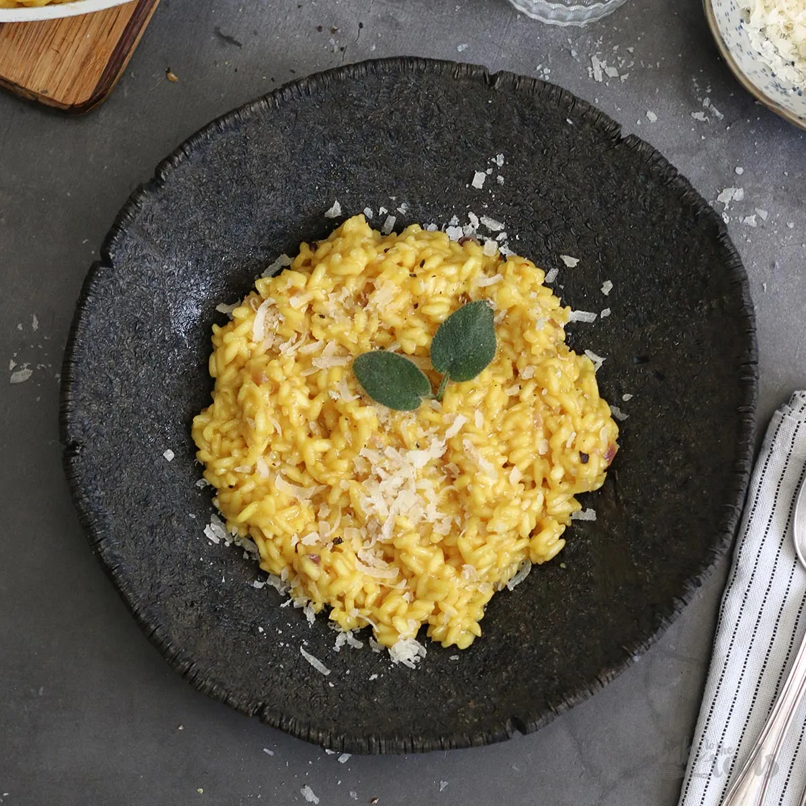

Risotto alla Milinese

Description
Risotto alla Milanese is, together with the Milanese cutlet and panettone, the most typical and well-known
dish of Milan. It is a risotto whose main ingredients, in addition to those necessary to prepare a white risotto, are saffron,
from which its characteristic yellow color derives, and ox marrow. It can also be served as a dish for
Ossobuco, another typical Milanese dish.
Ingredients
- 5 1/2 cups chicken stock
- 2 tablespoons extra-virgin olive oil
- 1 small onion, finely chopped
- Kosher salt
- Freshly ground black pepper
- 1 1/2 cups arborio rice (10 ounces)
- Pinch of saffron threads
- 1/2 cup dry white wine
<1i>1/2 cup freshly grated Parmigiano-Reggiano cheese
- 1 tablespoon unsalted butter
- 2 tablespoon chopped flat-leaf parsley
Directions
- In a medium saucepan, bring the chicken stock to a simmer; keep warm. In a large saucepan,
heat the olive oil. Add the onion, season with salt and pepper, and cook over moderate heat,
stirring, until softened, about 5 minutes. Add the rice and cook for 1 minute, stirring to thoroughly coat.
- Crumble the saffron into the wine and add it to the rice. Cook, stirring, until the wine is
absorbed. Add 1 cup of the warm stock and cook over moderate heat, stirring constantly, until
nearly absorbed. Continue adding the stock 1/2 cup at a time, stirring constantly, until it is
nearly absorbed between additions.
- The risotto is done when the rice is al dente and suspended in a thick, creamy sauce, about
20 minutes total. Season the risotto with salt and pepper. Stir in the cheese, butter, and
parsley and serve immediately.
Return Home